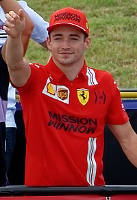

Campeonato Mundial de Fórmula 1 (2022)
O Campeonato Mundial de Fórmula 1 da FIA de 2022 foi a 73ª temporada do Campeonato Mundial de Fórmula 1, que é
reconhecido pela Federação Internacional de Automobilismo (FIA), o órgão regulador do automobilismo
internacional, como a mais alta categoria de competição para carros de corrida monopostos. O campeonato foi
disputado em 22 etapas, tendo iniciado no Barém, em 20 de março, e terminado nos Emirados Árabes Unidos, em 20
de novembro.
Em 9 de outubro de 2022, Max Verstappen venceu o Grande Prêmio do Japão em Suzuka, sagrando-se bicampeão
mundial de Fórmula 1
Lista dos 3 primeiros colocados do campeonato de 2022
- Max Verstappen

Max Emilian Verstappen (Hasselt, 30 de setembro de 1997) é um automobilista neerlandês. Ele é piloto de
Fórmula 1 desde 2015, tendo feito sua estreia pela equipe Toro Rosso. Foi duas vezes campeão da Fórmula 1 em
2021 e 2022, e terminou em terceiro lugar em 2019 e 2020 com a Red Bull Racing, equipe pela qual corre desde
2016.
- Charles Leclerc

Charles Marc Hervé Perceval Leclerc, mais conhecido como Charles Leclerc, (Monte Carlo, 16 de outubro de
1997) é um piloto de automóveis monegasco que compete na Fórmula 1 pela equipe Ferrari.
Integrou a Ferrari Driver Academy desde 2016, e ganhou o campeonato da GP3 Series em 2016 e o Campeonato de
Fórmula 2 da FIA em 2017, pela ART Grand Prix.
- Sergio Pérez

Sergio Michel Pérez Mendoza (Guadalajara, 26 de janeiro de 1990) é um automobilista mexicano que atua na
Formula 1 e atualmente faz parte da grade de pilotos da equipe Red Bull Racing.
Em 29 de maio de 2022, Pérez venceu a corrida no Grande Prêmio de Mônaco e se tornou o primeiro mexicano
a vencer uma corrida em Mônaco e sendo o maior vencedor da história mexicana na Fórmula 1, superando as duas
vitórias de Pedro Rodríguez.
Equipes participante da edição de 2022
- Alfa Romeo F1 Team Orlen[
- Scuderia AlphaTauri
- BWT Alpine F1 Team
- Aston Martin Aramco Cognizant F1 Team
- Scuderia Ferrari
- Haas F1 Team
- McLaren F1 Team
- Mercedes-AMG Petronas F1 Team
- Oracle Red Bull Racing
- Williams Racing
GP Temporada 2022 Fórmula 1
| Grande Prêmio |
Vencedor |
Equipe |
Grande Prêmio do Barém |
Charles Leclerc |
Ferrari |
| Grande Prêmio da Arábia Saudita |
Max Verstappen |
Red Bull Racing-RBPT |
| Grande Prêmio da Austrália |
Charles Leclerc |
Ferrari |
| Grande Prêmio da Emília-Romanha |
Max Verstappen |
Red Bull Racing-RBPT |
| Grande Prêmio de Miami |
Max Verstappen |
Red Bull Racing-RBPT |
| Grande Prêmio da Espanha |
Max Verstappen |
Red Bull Racing-RBPT |
| Grande Prêmio de Mônaco |
Sergio Pérez |
Red Bull Racing-RBPT |
| Grande Prêmio do Azerbaijão |
Max Verstappen |
Red Bull Racing-RBPT |
| Grande Prêmio do Canadá |
Max Verstappen |
Red Bull Racing-RBPT |
| Grande Prêmio da Grã-Bretanha |
Carlos Sainz Jr. |
Ferrari |
| Grande Prêmio da Áustria |
Charles Leclerc |
Ferrari |
| Grande Prêmio da França |
Max Verstappen |
Red Bull Racing-RBPT |
| Grande Prêmio da Hungria |
Max Verstappen |
Red Bull Racing-RBPT |
| Grande Prêmio da Bélgica |
Max Verstappen |
Red Bull Racing-RBPT |
| Grande Prêmio dos Países Baixos |
Max Verstappen |
Red Bull Racing-RBPT |
| Grande Prêmio da Itália |
Max Verstappen |
Red Bull Racing-RBPT |
| Grande Prêmio de Singapura |
Sergio Perez |
Red Bull Racing-RBPT |
| Grande Prêmio do Japão |
Max Verstappen |
Red Bull Racing-RBPT |
| Grande Prêmio dos Estados Unidos |
Max Verstappen |
Red Bull Racing-RBPT |
| Grande Prêmio da Cidade do México |
Max Verstappen |
Red Bull Racing-RBPT |
| Grande Prêmio de São Paulo |
George Russell |
Mercedes |
| Grande Prêmio de Abu Dhabi |
Max Verstappen |
Red Bull Racing-RBPT |
Referencias: